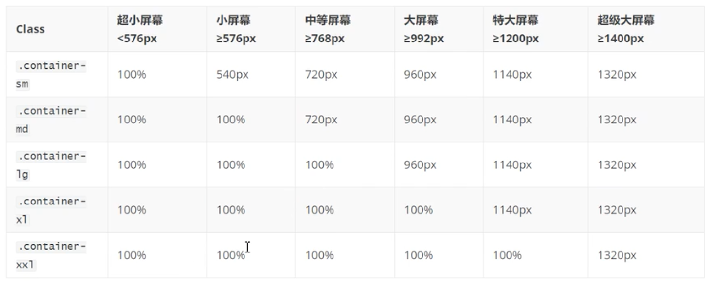

.container 类用于创建固定宽度的响应式页面
注意：宽度（max-width）会根据屏幕宽度同比例放大或缩小
.conatainer-fluid 用于创建一个全屏幕尺寸的容器，容器始终跨越整个屏幕宽度（width始终为100%）
这两种容器的共同点是它们都将高度设置为auto，即自动模式。最大的不同就是宽度的设定上。
container 根据屏幕宽度根据媒体查询，已经设置了固定的宽度且始终居中，作为阶段性的改变宽度，所以在浏览器改变大小时，页面是随着浏览器的大小阶段变化的。
container-fluid则是将宽度设定为auto，所以当缩放浏览器时，他会保持浏览器全屏大小，始终保持100%宽度
可以使用.container-sm|md|lg|xl|xxl类来创建响应式容器。
容器的max-width属性值会根据屏幕的大小来改变。
可以看到，对于某个给定的大小如container-sm，会对当前配置指定固定宽度，小于该配置的屏幕，宽度都显示为100%。